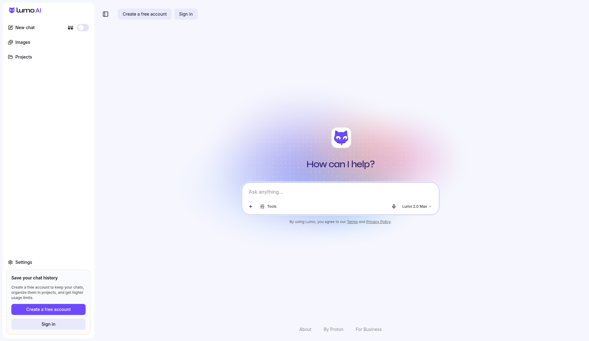
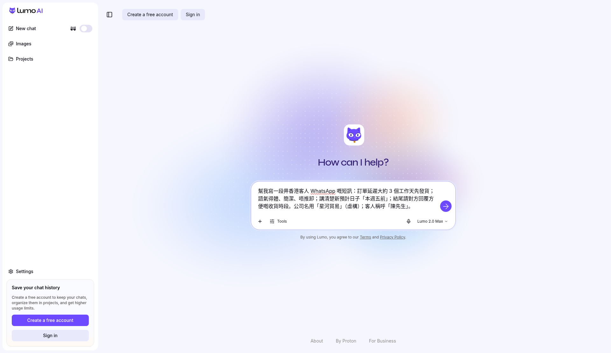
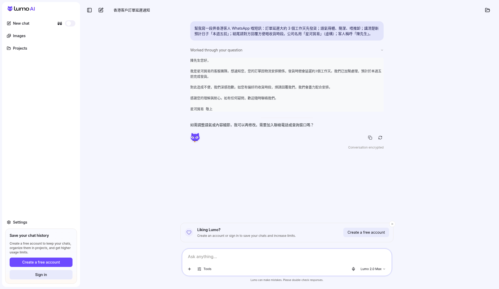
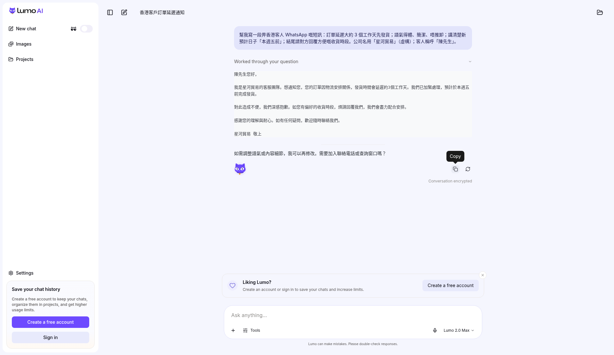

客人喺 WhatsApp 追貨，腦汁空白怕得罪人。第42集用 Proton Lumo Guest，免登入：開 lumo.proton.me/guest，composer 見「Ask anything…」，貼延遲交貨提示，撳紫色圓箭（無障礙名稱 Start generating，按鈕面無字），再撳 Copy 抄走一段得體短訊。示範公司叫「星河貿易」，客人稱呼「陳先生」。公司名、客人名、貨期全屬虛構。本則逐步截圖跟 2026-10-20 Guest 畫面。
Reel 一句講晒：Lumo｜客人追貨／延遲交貨覆訊
本則逐步截圖：空白 Guest、貼好提示、紫色圓箭、覆訊、Copy，都喺下面。
你會學到
- 點樣開 Lumo Guest，免登入，見到「Ask anything…」
- 點樣貼延遲交貨提示，再撳紫色圓箭（無障礙名稱 Start generating）
- 點樣撳 Copy，抄走覆訊，自己核對先貼去客人 WhatsApp
開始前準備
- 瀏覽器開 lumo.proton.me/guest。Guest 免登入。2026-10-20 畫面頂欄有 Create a free account 同 Sign in，即係未登入
- 先寫低你真係可以講嘅貨期。下面示範：延遲大約 3 個工作天，新預計日子「本週五前」。公司名用「星河貿易」，客人稱呼「陳先生」，都係虛構。真實公司名、客人名、電話、地址先改走
- 知道稿只係起稿。畫面底寫住 Lumo can make mistakes. Please double-check responses. 抄去 WhatsApp 之前讀一次

可抄提示
示範提示（虛構公司「星河貿易」，客人稱呼「陳先生」）
幫我寫一段畀香港客人 WhatsApp 嘅短訊：訂單延遲大約 3 個工作天先發貨；語氣得體、簡潔、唔推卸；講清楚新預計日子「本週五前」；結尾請對方回覆方便嘅收貨時段。公司名用「星河貿易」（虛構）；客人稱呼「陳先生」。
你自己用就換走公司名、客人稱呼同新預計日子。出嚟嘅短訊要自己讀。AI 加咗你冇寫嘅電話、地址、折扣、退款，先刪走。
3 步做法
2026-10-20 Guest 畫面：入口係 lumo.proton.me/guest，免登入。空白 composer 寫「Ask anything…」。送出掣係紫色圓箭，按鈕面無字，無障礙名稱係 Start generating。回覆動作嘅提示係 Copy。模式見到 Lumo 2.0 Max。
-
開 Guest：開 lumo.proton.me/guest，唔使帳戶。Composer 見「Ask anything…」。將上面嗰段星河貿易提示貼入去。未撳紫色圓箭之前，中間仍然寫 How can I help?，提示留喺輸入框。
貼之前睇一次：冇真實公司名、客人名、電話、地址。示範用「星河貿易」同「陳先生」。

真實畫面（2026-10-20 截圖，Guest）：第 1 步。提示已貼，寫住星河貿易、陳先生、本週五前。紫色圓箭未撳。免登入。 -
撳 Start generating：撳右下角紫色圓箭。按鈕面無字。無障礙名稱係 Start generating。等覆訊出齊先再睇，見到第一句就停係未完成。
2026-10-20 覆訊寫住：陳先生您好；我是星河貿易的客服團隊；訂單因物流安排關係，發貨時間會延遲約 3 個工作天；預計於本週五前完成發貨；請回覆偏好的收貨時段；星河貿易 敬上。對得上提示先留低。
同一段後面仲問：需要加入聯絡電話或查詢窗口嗎？提示冇寫電話，呢句留喺 Lumo，唔好抄去 WhatsApp。畫面亦寫 Worked through your question、Conversation encrypted，同 Lumo can make mistakes. Please double-check responses.
真實畫面（2026-10-20 截圖，Guest）：第 2 步，同一張貼好提示嘅畫面。右下角紫色圓箭，按鈕面無字，無障礙名稱係 Start generating。 
真實畫面（2026-10-20 截圖，Guest）：撳 Start generating 之後。覆訊用虛構「星河貿易」同「陳先生」。後面問聯絡電話嘅一句，唔好抄去 WhatsApp。 -
撳 Copy：覆訊出齊之後，撳回覆動作。提示字係 Copy。抄走由「陳先生您好」到「星河貿易 敬上」。自己再讀一次公司名、客人稱呼、3 個工作天、本週五前，先貼去客人 WhatsApp。
呢步係你自己覆客人。畫面寫 Create an account or sign in to save your chats and increase limits。Guest 免登入，關窗對話會清。想留低先開帳戶。AI 可能會出錯，正式覆客請自己核對。

真實畫面（2026-10-20 截圖，Guest）：第 3 步。回覆動作提示 Copy。抄到「星河貿易 敬上」為止。
常見錯誤／注意事項
- 話一定要登入：Guest 免登入。2026-10-20 畫面有 Sign in 同 Create a free account，因為未登入，唔係入唔到。
- 以為 Guest 會幫你存檔：畫面寫 Create an account or sign in to save your chats。關窗對話會清。想留低先開帳戶。
- 加電話或者查詢窗口：覆訊尾問要不要加入聯絡電話。提示冇寫，就唔好抄去 WhatsApp。
- 當示範係真實公司：「星河貿易」同「陳先生」係拍片用。真實公司名、客人名、電話、地址、訂單先換走。
- 見第一句就貼去 WhatsApp：等短訊出齊，讀完公司名、稱呼、本週五前先抄。呢頁教你出覆訊。
- 搵寫住 Start generating 嘅字：按鈕面無字，係一顆紫色圓箭。無障礙名稱先至係 Start generating。
- 當用量無限：畫面寫開帳戶先 increase limits。Guest 係有限用量，以你當日畫面為準。
- 當客服政策：新貨期、賠償、退款跟你舖頭自己嘅做法。畫面底寫 Lumo can make mistakes。
示範公司「星河貿易」、客人「陳先生」純屬虛構。覆訊請按你自己嘅貨期改。整好可以抄去客人 WhatsApp。本則逐步截圖見上面。
香港用戶留意
示範用瀏覽器開 Guest，冇裝 App，免登入。2026-10-20 畫面：composer「Ask anything…」、模式 Lumo 2.0 Max、紫色圓箭（無障礙名稱 Start generating，按鈕面無字）、回覆提示 Copy。覆訊跟提示用繁體中文。整好先抄去客人 WhatsApp。密碼喺網頁（個人檔連結）。
官方說明
- Getting started with Lumo（Proton 說明）
2026-10-20 再讀：開 lumo.proton.me，打提示，按 Enter 或者撳 Send。可以唔使帳戶即開有限用量嘅對話。今集 Guest 畫面送出係紫色圓箭，按鈕面無字，無障礙名稱係 Start generating。模型有時會唔準，用出 Lumo 之前要核對 - Lumo privacy（Proton 說明）
2026-10-20 再讀：Guest 對話喺每個 session 結束就清走。今集畫面寫 Conversation encrypted，並叫你開帳戶先儲到對話同提高用量 - Lumo（Proton 官方產品頁）
2026-10-20 產品頁回 200。官方寫可以用 guest access，唔使登入或者開 Proton 帳戶。呢集寫 Guest 免登入 - Lumo Guest（Proton）
2026-10-20 核實：Guest 路徑回 200。示範冇登入。畫面見 Ask anything…、Lumo 2.0 Max、紫色圓箭、Copy
（本則逐步截圖。掣名跟當日 Guest 畫面：Ask anything…、Start generating、Copy。介面可能更新，以你當日畫面同官方為準）
原帖
睇原 Reel ↗（2026-10-24 發佈）